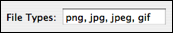
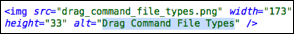

Drag commands are like normal commands but they are activated by dropping a particular file type (specified as a list of file type extensions) into the editing window.

The output from executing a drag command is always inserted as a snippet and the drag command has three (additional) environment variables available:
TM_DROPPED_FILE — relative path of the file dropped (relative to the document directory, which is also set as the current directory).
TM_DROPPED_FILEPATH — the absolute path of the file dropped.
TM_MODIFIER_FLAGS — the modifier keys which were held down when the file got dropped. This is a bitwise OR in the form: SHIFT|CONTROL|OPTION|COMMAND (in case all modifiers were down).
So here is a slightly complex drag command:
img="$TM_DROPPED_FILE"
echo -n "<img src=\"$img\" "
sips -g pixelWidth -g pixelHeight "$img" \
|awk '/pixelWidth/ { printf("width=\"%d\" ", $2) }
/pixelHeight/ { printf("height=\"%d\" ", $2) }'
base=${img##*/}
alt=$(tr <<<${base%.*} '[_-]' ' '|perl -pe 's/(\w+)/\u$1/g')
echo -n "alt=\"\${1:$alt}\">"
First we output the <img src="…" part. Then we use sips to query the image and awk to parse the output from sips and output the proper width="…" and height="…" arguments. Last we convert - and _ in the path to spaces and capitalize each word and output this as the final alt="…" argument, where we make this text a placeholder (since the entire thing is inserted as a snippet).
